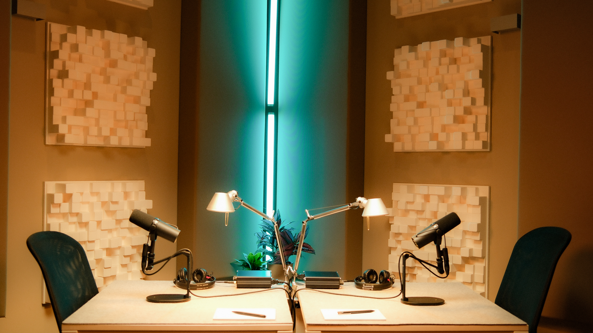
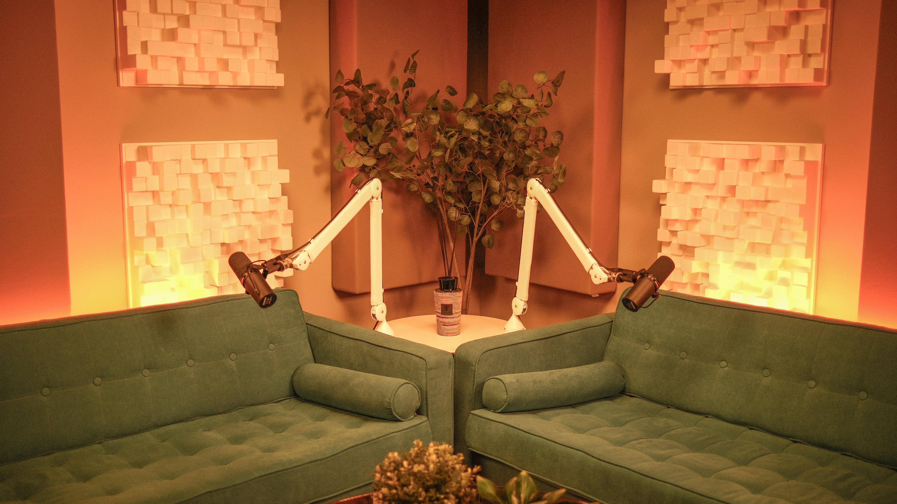
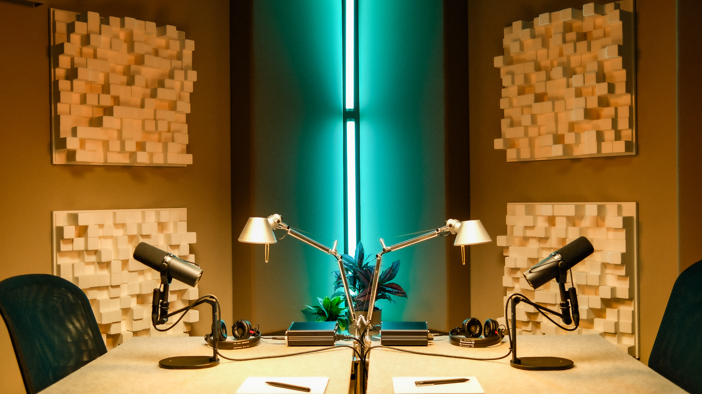
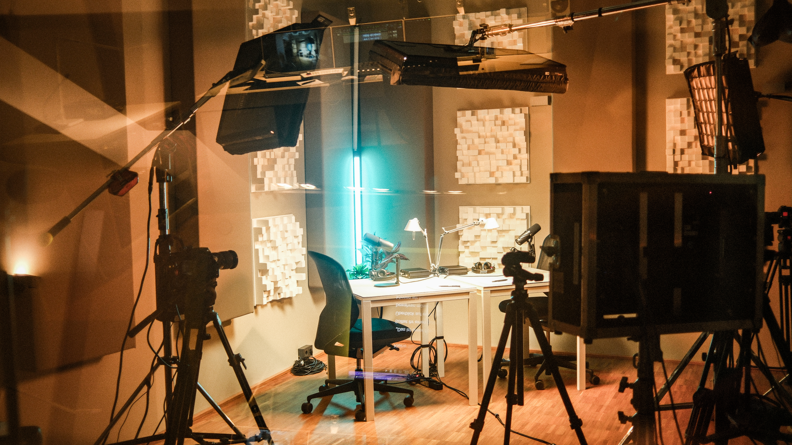
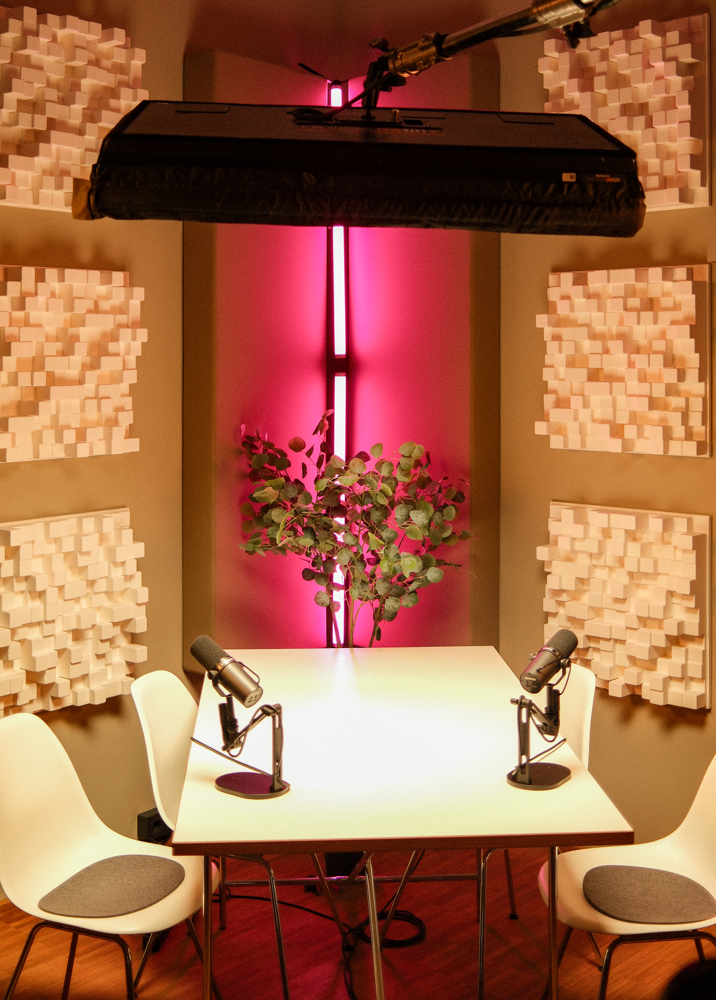
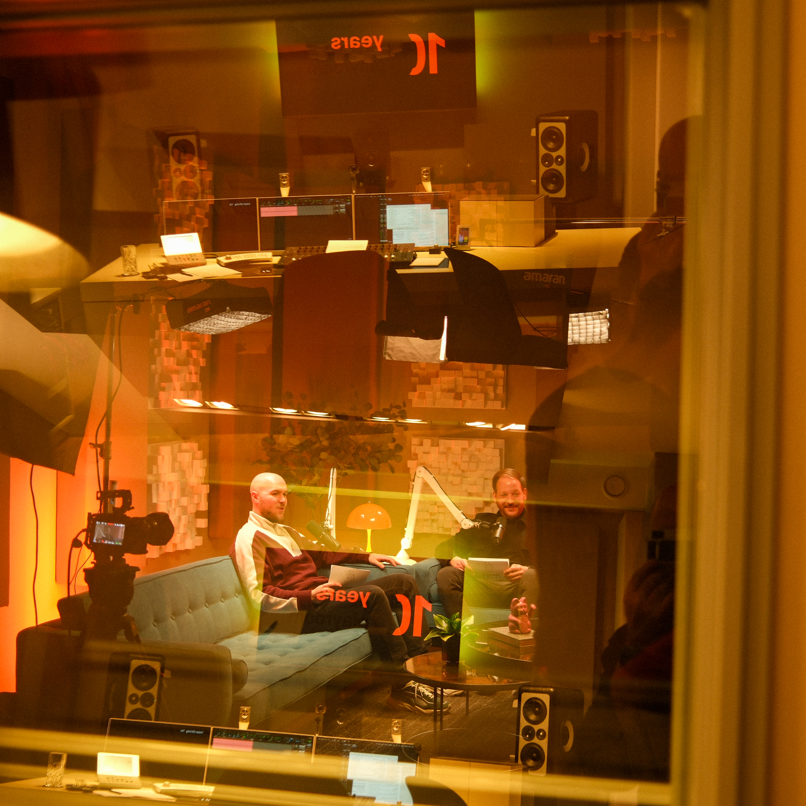
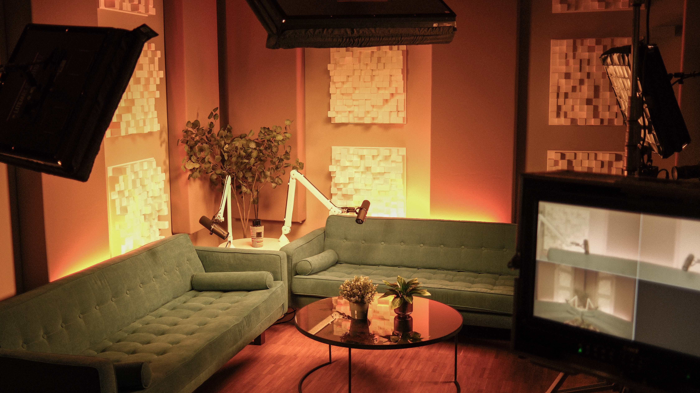
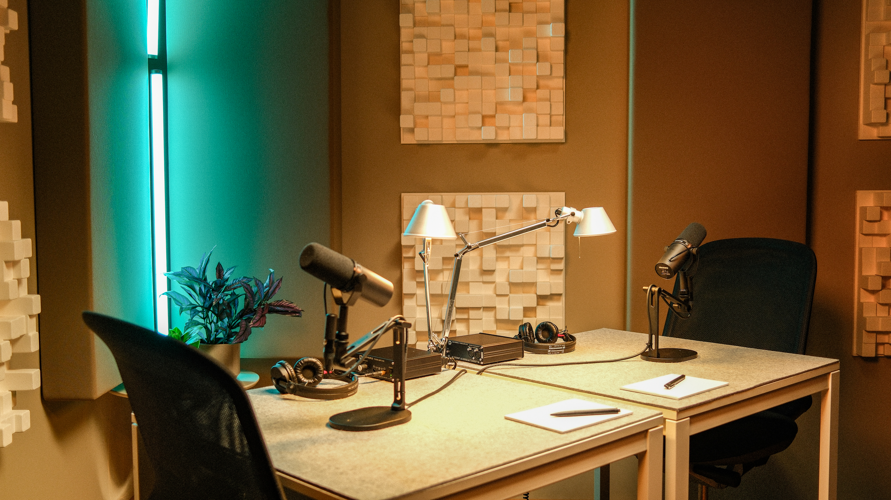

„Professionelle Formate entstehen dort, wo Technik, Atmosphäre und Produktionserfahrung zusammenkommen.“
Playroom Studios ist ein Podcast- und Videopodcast-Studio in Frankfurt am Main, das ursprünglich für professionelle Audio-Postproduktionen konzipiert wurde. Diese Grundlage unterscheidet unser Studio von vielen anderen Angeboten: Der Aufnahmeraum ist in Raum-in-Raum-Bauweise konstruiert – akustisch entkoppelt von der Umgebung und speziell für Sprachaufnahmen optimiert.
Das bedeutet keine störenden Raumreflexionen, keinen Nachbearbeitungsaufwand durch schlechten Klang. Gespräche klingen so, wie sie geführt werden – klar, natürlich und ohne den Hall, der normale Räume als Aufnahmeorte disqualifiziert.


Neben klassischen Audio-Formaten produziert Playroom Studios Videopodcasts mit einem professionellen Mehrkamera-Setup in 4K. Jede Kameraeinstellung ist auf die Gesprächssituation abgestimmt – nicht nachträglich, sondern bereits in der Planung des Produktionsablaufs.
Das Ergebnis sind Formate, die auf YouTube, LinkedIn oder internen Unternehmensplattformen funktionieren – technisch sauber, visuell überzeugend, ohne den Kompromiss zwischen Bild- und Tonqualität, der bei einfacheren Setups oft entsteht.
Je nach Projektumfang und internen Ressourcen übernimmt Playroom Studios einzelne Produktionsschritte oder begleitet ein Format von der ersten Idee bis zur Veröffentlichung.

Ein Videopodcast wird dann unverwechselbar, wenn Inhalt, Bild und Klang zusammen eine klare Identität bilden. Playroom Studios unterstützt auch bei der kreativen Gestaltung – weit über die reine Aufnahme hinaus.



Playroom Studios betreibt ein Podcast- und Videopodcast-Studio in Frankfurt am Main auf der Hanauer Landstraße. Die Aufnahmen finden in einem akustisch optimierten Tonstudio statt, das in einer Raum-in-Raum-Konstruktion gebaut wurde. Diese Bauweise sorgt dafür, dass der Aufnahmeraum konstruktiv von der Umgebung entkoppelt ist und stabile Bedingungen für Sprachaufnahmen bietet.
Neben der Audioaufnahme steht ein Mehrkamera-Setup für Videopodcasts zur Verfügung, sodass Gespräche gleichzeitig als Video- und Audioformat produziert werden können.
Der Standort auf der Hanauer Landstraße ist sowohl mit öffentlichen Verkehrsmitteln als auch mit dem Auto gut erreichbar.
Ja. Gesprächspartner können remote zugeschaltet werden und an einer Aufnahme teilnehmen, auch wenn sie nicht vor Ort sind.
Die Verbindung wird so eingerichtet, dass Bild und Ton in die laufende Produktion integriert werden können.
Die Anzahl der Kameras hängt vom jeweiligen Gesprächsformat und von der Anzahl der Teilnehmenden ab.
Für typische Gesprächssituationen mit zwei bis vier Personen wird in der Regel ein Mehrkamera-Setup eingesetzt. Dabei erhält jede Person eine eigene Kameraeinstellung, zusätzlich kann eine weitere Kamera für eine Totale oder für Gesprächssituationen verwendet werden.
Wie viele Kameras eingesetzt werden und welches Lichtsetting sinnvoll ist, wird in der Regel nach einem kurzen Produktionsbriefing entschieden.
Am Anfang steht in der Regel ein Gespräch über das geplante Format und die inhaltlichen Ziele. Dabei wird geklärt, welche Rolle der Podcast im Unternehmen spielen soll und welche Aufgaben vom Unternehmen selbst übernommen werden.
Einige Organisationen bringen bereits ein fertiges Konzept und eine Redaktion mit. In anderen Fällen wird gemeinsam überlegt, wie Gespräche aufgebaut sein können, wer als Gesprächspartner geeignet ist und ob eine Moderation sinnvoll ist.
Auf dieser Grundlage wird die Produktion geplant. Dazu gehören unter anderem das technische Setup, die Anzahl der Kameras, die Gestaltung der Gesprächssituation sowie der Ablauf der Aufnahme.
Ja. Viele Formate entstehen in Unternehmen, die dieses Medium zum ersten Mal nutzen. Am Anfang steht ein Gespräch über Ziele, Inhalte und mögliche Formate. Wir übernehmen dabei so viel oder so wenig wie sinnvoll – von der Konzeptentwicklung bis zur vollständigen redaktionellen Begleitung.
Das hängt vom jeweiligen Format ab. Bei internen Formaten mit Mitarbeitenden gelten Zustimmungspflichten und in vielen Fällen Mitbestimmungsrechte des Betriebsrats.
Wir besprechen diese Aspekte gerne im Rahmen des Briefings und empfehlen, rechtliche Details intern oder mit einem Datenschutzbeauftragten zu klären.
Ja. Bauchbinden, Intromusik, Farbschemata und Bildsprache können auf bestehende CI-Richtlinien abgestimmt werden. Wenn Sie entsprechende Vorgaben mitbringen, werden diese in die Produktion integriert.

Ob neue Formatidee oder konkretes Projekt – wir beraten Sie gern, wie sich Podcast- und Videopodcast-Produktionen für Ihr Unternehmen sinnvoll umsetzen lassen.
Projekt anfragenPlayroom Studios ist ein Podcast- und Videopodcast-Studio in Frankfurt am Main, das professionelle Audio- und Videoformate für Unternehmen, Marken und Agenturen produziert. Das Studio befindet sich auf der Hanauer Landstraße 287 in Frankfurt am Main und ist auf Corporate-Kommunikationsformate spezialisiert.